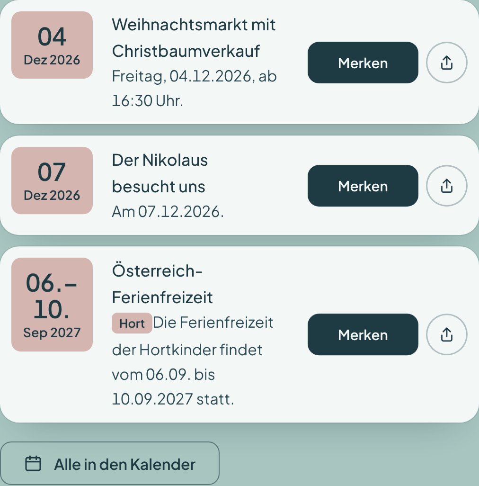
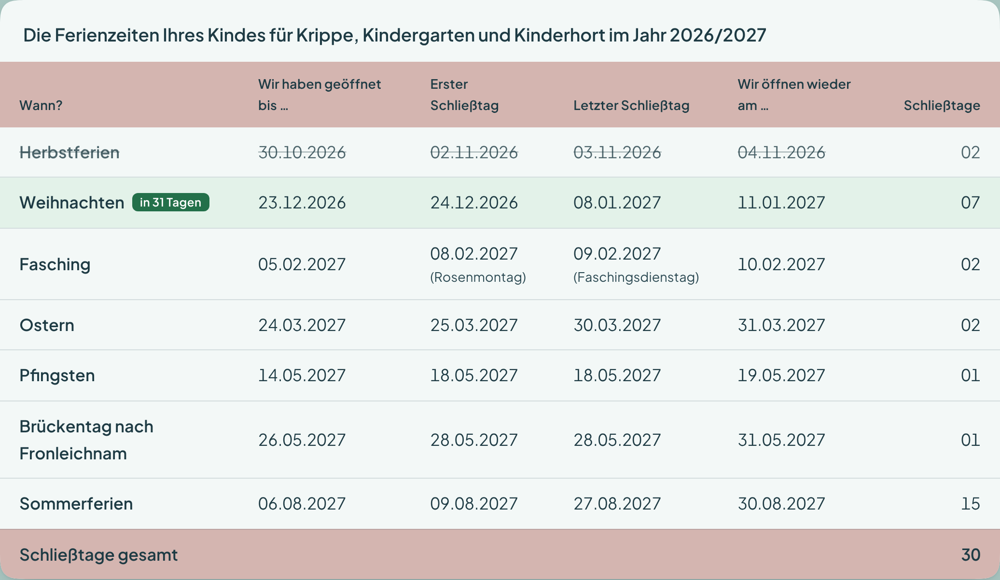
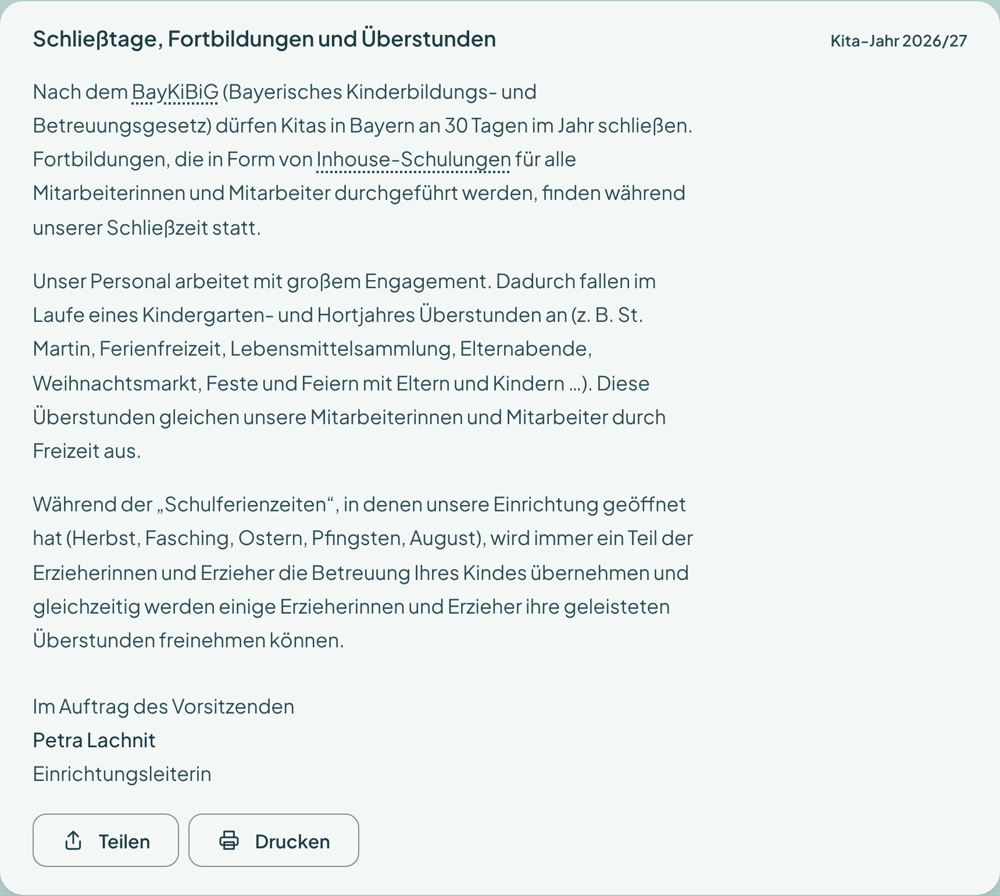
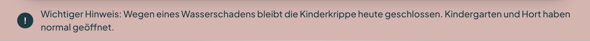

Termine, Schließtage, Elternbriefe und Hinweise tragen Sie in einfache Tabellen ein. Ein kurzer Befehl baut daraus die fertige Webseite, die Sie dann hochladen. Diese Anleitung zeigt jeden Schritt.
Alle Tabellen liegen im Ordner kinderhort-website/daten/.
| Datei | Was steht darin? | Wo erscheint es? |
|---|---|---|
| termine.csv | Termine und Veranstaltungen | „Aktuelles“, Startseite, Kalenderdatei |
| schliesstage.csv | Ferien und Schließtage des Kita-Jahres | Tabelle „Schließtage“, Anzeige „Jetzt geöffnet“, Kalenderdatei |
| elternbriefe.csv | Elternbriefe (neuester oben) | „Aktuelles“ → „Liebe Eltern“ |
| hinweise.csv | Kurze Hinweise mit Datum (z. B. Sankt Martin) | „Aktuelles“, verschwinden am Tag danach von selbst |
| dringend.csv | Wichtiger Hinweis bei kurzfristigen Änderungen (Streik, Krankheitswelle, Schließung) | Oben auf allen Seiten und in der Anzeige „Jetzt geöffnet“, verschwindet nach dem Enddatum von selbst |
| feiertage.csv | Gesetzliche Feiertage in Bayern | Anzeige „heute geöffnet/geschlossen“, Kalender |
| elternstimmen.csv | Zitate von Eltern (nur mit Einverständnis, ohne Namen) | Startseite (erscheint erst, wenn etwas drinsteht) |
04.12.2026 – nicht „4.12.26“ und nicht „4. Dezember“. Excel ändert Datumsangaben manchmal von selbst; die Prüfung beim Bauen (Schritt 7) meldet das sofort.Öffnen Sie termine.csv und fügen Sie eine neue Zeile hinzu. Die Reihenfolge der Zeilen ist egal – die Webseite sortiert nach Datum. Vergangene Termine verschwinden automatisch; Sie müssen sie nicht löschen.
| von | bis | Titel | Beschreibung | Bereich |
|---|---|---|---|---|
| 04.12.2026 | 04.12.2026 | Weihnachtsmarkt mit Christbaumverkauf | Freitag, 04.12.2026, ab 16:30 Uhr. | |
| 07.12.2026 | 07.12.2026 | Der Nikolaus besucht uns | Am 07.12.2026. | |
| 12.01.2027 | 12.01.2027 | Elternabend Kindergarten | Um 19:30 Uhr im Turnraum. | Kindergarten |
| 06.09.2027 | 10.09.2027 | Österreich-Ferienfreizeit | Die Ferienfreizeit der Hortkinder findet vom 06.09. bis 10.09.2027 statt. | Hort |
**zwei Sternchen** wird ein Wort fett. Internet- und E-Mail-Adressen werden von selbst anklickbar.Krippe, Kindergarten oder Hort (mehrere mit Komma). Dann gibt es auf „Aktuelles“ die Knöpfe zum Filtern.
So sieht die Terminliste auf der Webseite aus. Eltern können Termine merken, teilen und in ihren Kalender übernehmen.
In schliesstage.csv steht pro Schließzeit eine Zeile. Für das neue Kita-Jahr die alten Zeilen durch die neuen ersetzen.
| Anlass | geöffnet bis | erster Schließtag | Hinweis erster Tag | letzter Schließtag | Hinweis letzter Tag | wieder geöffnet | Schließtage |
|---|---|---|---|---|---|---|---|
| Herbstferien | 30.10.2026 | 02.11.2026 | 03.11.2026 | 04.11.2026 | 2 | ||
| Fasching | 05.02.2027 | 08.02.2027 | Rosenmontag | 09.02.2027 | Faschingsdienstag | 10.02.2027 | 2 |

Die Tabelle „Schließtage“ auf der Seite „Aktuelles“.
Daraus berechnet die Startseite auch „Jetzt geöffnet / geschlossen“ und die nächste Schließzeit.
In elternbriefe.csv kommt der neueste Brief ganz nach oben (direkt unter die Kopfzeile).
| Stand | Titel | Text | Gruß |
|---|---|---|---|
| Januar 2027 | Fasching im Hort | Liebe Eltern, am Rosenmontag … ||Bitte geben Sie Ihrem Kind **kein Konfetti** mit. ||Weitere Infos: https://… | Herzliche Grüße||**Petra Lachnit**||Einrichtungsleiterin |
| Kita-Jahr 2026/27 | Schließtage, Fortbildungen und Überstunden | Nach dem BayKiBiG … | Im Auftrag des Vorsitzenden||**Petra Lachnit**||Einrichtungsleiterin |
|| (zwei senkrechte Striche) beginnt einen neuen Absatz bzw. eine neue Zeile im Gruß.**…** macht Text fett.
Eltern können jeden Brief aufklappen, durchsuchen, teilen und einzeln drucken.
Für kurze, zeitlich begrenzte Hinweise gibt es hinweise.csv. Am Tag nach dem Datum verschwindet der Hinweis von selbst.
| Datum | Titel | Text |
|---|---|---|
| 11.11.2026 | Sankt Martin | Der Sankt-Martins-Umzug findet auch in diesem Jahr wieder in den einzelnen Gruppen statt. |
So ungefähr erscheint der Hinweis auf „Aktuelles“.
Wenn sich kurzfristig etwas ändert – Streik, Krankheitswelle, Wasserschaden, eine Gruppe bleibt geschlossen –, tragen Sie es in dringend.csv ein. Der Hinweis erscheint dann oben auf jeder Seite und in der Anzeige „Jetzt geöffnet / geschlossen“. Nach dem Datum in „bis“ verschwindet er von selbst.
| von | bis | Text |
|---|---|---|
| 25.11.2026 | 25.11.2026 | Wegen eines Wasserschadens bleibt die Kinderkrippe heute geschlossen. Kindergarten und Hort haben normal geöffnet. |

So erscheint der Hinweis oben auf der Webseite.
Nach jeder Änderung an den Tabellen wird die Webseite einmal neu gebaut. Das dauert wenige Sekunden.
python.org → „Downloads“. Unter Windows beim Installieren „Add Python to PATH“ anhaken.cd Desktop\kinderhort-website).py build.py, Mac: python3 build.py):Steht am Ende „alles in Ordnung“, ist alles gut. Sonst nennt die Prüfung Datei, Zeile und Fehler, zum Beispiel:
Die fehlerhafte Zeile wird dann einfach weggelassen, der Rest der Seite funktioniert. Zeile korrigieren, speichern, noch einmal bauen.
Nach dem Bauen liegt neben dem Ordner die Datei kinderhort-webseite.zip. Sie enthält nur das, was öffentlich sein darf.
| Problem | Lösung |
|---|---|
| Umlaute erscheinen als „ä“ o. Ä. | Die Tabelle wurde nicht als UTF-8 gespeichert. Noch einmal als „CSV UTF-8“ speichern. |
| Alles steht in einer einzigen Spalte | Trennzeichen war Komma statt Semikolon. In LibreOffice beim Öffnen „Semikolon“ wählen. |
| „python“ wird nicht gefunden | Python ist nicht installiert oder „Add Python to PATH“ fehlte. Neu installieren. Unter Windows py build.py versuchen. |
| „No module named PIL“ | Einmal pip install pillow eingeben (Schritt 7). |
| Ein Termin fehlt auf der Seite | Liegt das Datum in der Vergangenheit? Meldet die Daten-Prüfung einen Fehler in dieser Zeile? |
| Die Datei erstmals.json | Bitte nicht von Hand ändern – sie merkt sich, seit wann ein Termin auf der Seite steht. |
Kath. Kinder- und Jugendhort Grombühl e. V. · Anleitung zur Webseite · Stand November 2026
Die Kurzfassung steht auch in der Datei daten/LIESMICH.txt.